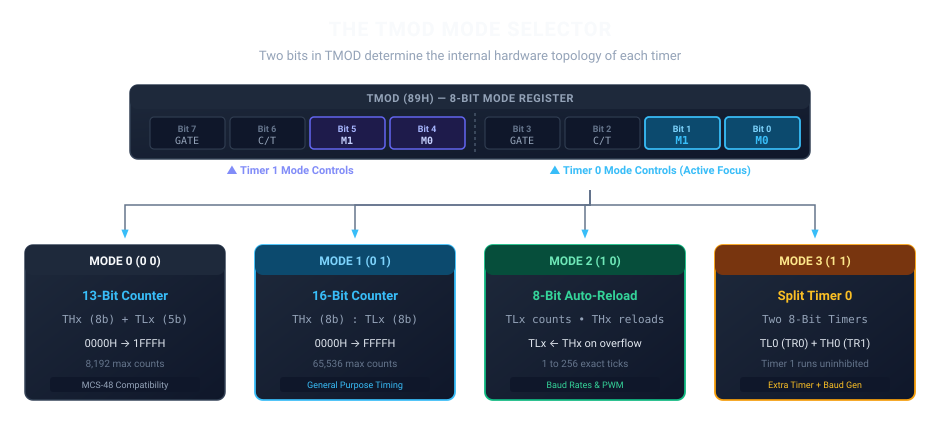
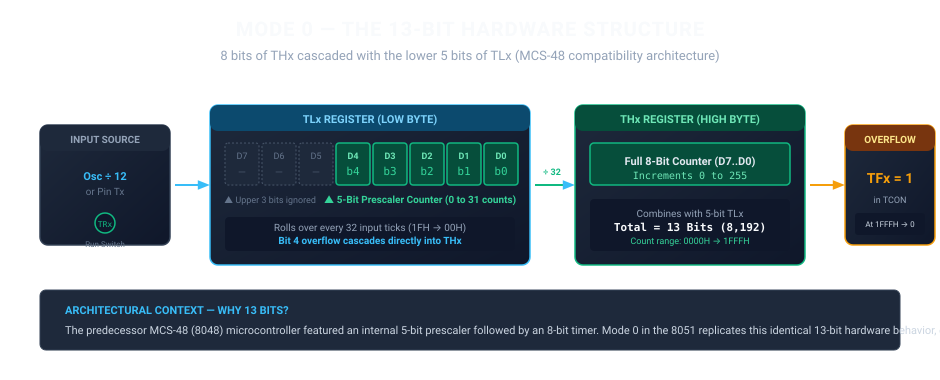
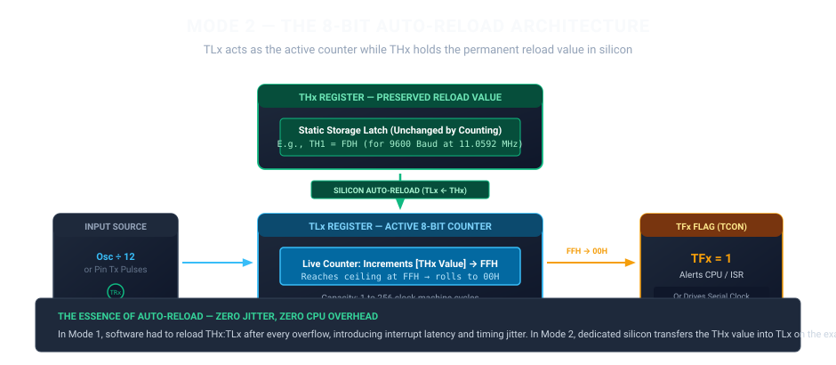
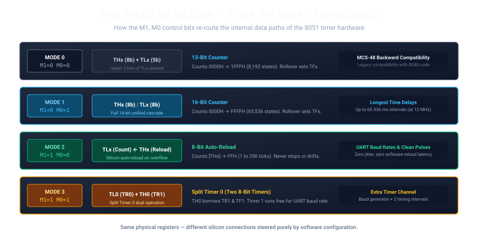

PrajnaEdge is not navigated like a conventional website. Knowledge is represented through paths, structures, and transitions.
Matter
NodeClick a node name to enter that concept and continue along the awakened path.
ExplorationsStep-by-step learning experiences containing theory, architecture, and interactive elements.
SetuA Setu connects related concepts that can be explored independently from the main sequence.
VortexA Vortex opens a path toward another knowledge area, foundation, or future domain.
BlackholeA deeper exploration space opened through the Vortex, where you select the depth of investigation.
AntarguhaA concealed exploration existing outside the regular path, waiting to be discovered within the system.
For the best experience, open PrajnaEdge on a desktop or laptop screen.
PrajnaEdge
A curiosphere for curious minds who want to understand, experiment with, and experience technology.
Technology is a system of connections.
Modern technology is built from layers that continuously interact with one another. At the physical level, electronic devices transform electrical signals into digital information. Digital logic turns that information into computation, while processors, memory and communication interfaces provide the machinery needed to execute instructions and move data. As these components become part of embedded systems, they begin to interact with the physical world through sensors, controllers, actuators and real-time software.
But computation does not exist in isolation. Operating systems coordinate hardware and software, firmware gives specialized machines their behaviour, and communication protocols allow independent systems to exchange information. At the same time, machine learning is moving beyond the cloud into edge and on-device systems, where models must operate within real constraints such as memory, processing power, latency and energy consumption.
PrajnaEdge explores these connections as one continuous technology landscape — and takes them beyond explanation. From computing foundations and embedded systems to intelligent machines and edge AI, ideas can be understood, experimented with, and eventually turned into technology that can be experienced in the real world.
PrajnaEdge products and technology experiences are currently in development.
In Development
Playground
Experiment with intelligence beyond the cloud.
AI runs closer to where data is generated — reducing dependence on distant cloud infrastructure and enabling faster, more responsive systems.
Edge AIComputer Vision
Image Classification
Can this image classifier maintain its intelligence while becoming small enough for the edge?
On-Device AIComing later
On-Device Intelligence
AI runs directly on the device where data is generated, bringing intelligence into the device itself while operating within its compute, memory, power and latency constraints.
Edge AI Playground
Image Classification
Can this image classifier maintain its intelligence while becoming small enough for the edge?
Choose an image
Upload an image
Supports JPG, JPEG, PNG
This classifier recognizes only Apple, Banana, and Orange. Other objects may be incorrectly classified as one of these classes.
AI runs directly on the device where data is generated, bringing intelligence into the device itself while operating within its compute, memory, power and latency constraints.
Coming later
Explorations
Explore the ideas, systems and connections that shape technology — choose any node to begin your journey.
Embedded Systems Tree
Sort by:
Edge AI Demonstrations
Deploying neural networks and intelligent decision loops on raw silicon targets.
Sort:
Controller
The 8051 — Four Shapes of Time
How the mode bits in TMOD reshape the internal counting silicon of the classic 8051.
Controller8051MicrocontrollerTimersTMODMode 0Mode 1Mode 2Mode 3Auto-ReloadEmbedded Systems
1. The Switches We Left Behind
In our previous exploration, we watched time turn into a digital signal.
We saw how Intel's architects took the universal grammar of machine timing and carved it into concrete silicon:
Software establishes the rules in TMOD.
The clock supplies the rhythm.
THx and TLx accumulate counts in silence.
TCON presents the live control levers.
By delegating the mechanical accumulation of machine cycles to autonomous hardware, the central processor was freed from the blind spin of software delay loops. Time became an observable hardware event.
Yet in establishing that foundation, we deliberately left two control switches untouched.
Inside the TMOD register, tucked neatly into each four-bit control group, sit two mode bits:
TMOD (89H)
├── Bit 1, Bit 0 → M1, M0 for Timer 0
└── Bit 5, Bit 4 → M1, M0 for Timer 1

The TMOD Mode Selector and Four Internal Topologies
We saw where these bits were located on the machine's control surface. Now we turn them.
In a modern textbook, M1 and M0 are usually dismissed in a dry, four-row reference table. The reader memorizes four mode numbers, passes an examination, and moves on without ever realizing what actually occurred.
What actually changes when the mode bits change?
The microcontroller does not possess four separate physical timers. It possesses one shared bank of counting flip-flops and bus gates. When software writes a new bit pattern into M1 and M0, it does not merely select a software setting. It steers internal silicon multiplexers, re-routes carry lines, and reorganizes the physical relationship between THx and TLx.
One piece of silicon takes four distinct hardware shapes.
2. Mode 0 — When 16 Bits Become 13
When both mode bits are cleared to zero (M1 = 0, M0 = 0), the 8051 enters Mode 0.
At first glance, the architecture appears strange:
The machine provides two full eight-bit Special Function Registers in the memory map—THx at 8CH/8DH and TLx at 8AH/8BH. Yet in Mode 0, only thirteen of those sixteen flip-flops participate in the counting chain.

Mode 0: The 13-Bit Hardware Structure
Here is how the silicon is wired:
Input pulses (derived either from the internal machine cycle clock Osc ÷ 12 or an external pin) flow through the TRx run switch directly into TLx. But they do not count through all eight bits. Only the lower five bits—D0, D1, D2, D3, and D4—participate.
These five bits form an internal prescaler capable of counting from 0 to 31 (00H to 1FH). The upper three bits of TLx (D5, D6, D7) are physically bypassed by the carry chain. Software can read them or write them, but incoming clock ticks never increment them.
When the lower five bits reach 1FH (31 decimal) and receive the 32nd pulse, bit 4 rolls over to zero. That rollover pulse does not spill into bit 5; instead, internal silicon steers the overflow signal directly into bit 0 of THx.
THx then behaves as a full eight-bit counter, accumulating counts from 0 to 255.
When THx reaches FFH and the five-bit prescaler in TLx reaches 1FH, the total thirteen-bit register pair holds 1FFFH (8,191 counts). The very next tick causes a complete rollover:
Why would Intel build a 13-bit timer into a modern 8-bit microcontroller?
The answer is historical lineage. Before the 8051 became the industry standard, Intel's dominant microcontroller family was the MCS-48 (the 8048). The 8048 featured a hardware timer built with an internal 5-bit prescaler feeding an 8-bit counter. When developing the 8051, the architects needed to ensure that existing MCS-48 embedded applications could be ported to the new machine with identical timing intervals and minimal rewrite.
Mode 0 is not a technical compromise; it is an architectural bridge to the past. The physical registers exist in full, but the internal routing rewires them to emulate an earlier machine.
3. Mode 1 — The Full 16-Bit Counter
When the mode bits are set to M1 = 0 and M0 = 1, the timer assumes its cleanest, most natural form: Mode 1.
In this mode, all eight bits of TLx are active. Incoming pulses increment TLx from 00H up to FFH (0 to 255 counts). On the 256th tick, TLx rolls over from FFH to 00H and sends a carry pulse directly into bit 0 of THx.
THx accumulates these carries, incrementing once every 256 input cycles.
Together, THx and TLx form a unified 16-bit up-counter capable of recording 65,536 continuous states:
At a standard crystal frequency of 12 MHz, one machine cycle equals exactly 1 µs. In Mode 1, the timer can measure any duration from 1 µs up to:
65,536 × 1 µs = 65,536 µs = 65.536 ms
To measure a specific interval—say, 50,000 µs (50 ms)—software does not start the counter at zero. Instead, it calculates the pre-load offset:
Starting Count = 65,536 − 50,000 = 15,536 = 3CB0H
Software writes 3CH into TH0 and B0H into TL0, then sets TR0 = 1. The counter increments 50,000 times, arrives at FFFFH, rolls over to 0000H, and immediately raises TF0 = 1.
Mode 1 offers the widest dynamic range in the classic 8051 architecture. But it carries a hidden architectural price:
The moment the counter rolls over and raises TFx, THx:TLx sits at 0000H. If the application requires a repeating 50 ms tick, software must intervene: an Interrupt Service Routine (ISR) or polling loop must catch the flag, halt the timer, reload 3CB0H back into the registers, and restart counting.
In high-speed communication or precise frequency synthesis, that software reload delay introduces a fatal flaw: timing jitter. Every instruction the CPU takes to respond to the interrupt pushes the reload later into the future.
The architects knew this. And for that reason, they built a third shape.
4. Mode 2 — When the Count Comes Back
When the mode bits are set to M1 = 1 and M0 = 0, the timer hardware undergoes its most significant operational transformation: 8-bit Auto-Reload.
In Mode 2, THx stops counting entirely.
MODE 2: 8-BIT AUTO-RELOAD
TLx → Active 8-bit Counter (Counts from reload value to FFH)
THx → Static Reload Latch (Preserves baseline count in silicon)

Mode 2: The 8-Bit Auto-Reload Architecture
The division of labor is radical:
TLx is the only register that receives clock pulses. It increments through its eight bits: 00H up toward FFH.
THx, meanwhile, is treated by the hardware as an immutable holding pen. Software writes a byte into THx during initialization—for instance, FDH. Counting pulses do not alter THx. It sits silently in the upper data space, holding its value like a physical stencil.
Now observe what happens on overflow.
When TLx reaches FFH and receives the next tick:
1. TLx rolls over: FFH → 00H
2. Hardware sets the overflow flag: TFx = 1 (in TCON)
3. Dedicated silicon bus lines instantly copy the contents of THx into TLx
All three actions happen simultaneously on the exact same clock edge.
The timer does not wait for the CPU. It does not generate an interrupt and beg software to reload its starting number. The silicon hardware reloads itself.
Because the reload occurs in hardware without executing a single instruction, the period between successive overflows is mathematically exact:
Reload Value FDH (253 decimal)
Capacity = 256 − 253 = 3 machine cycles
Every 3 µs, like clockwork, TFx pulses and TLx reloads.
There is zero software latency. Zero timing jitter. Even if the CPU is locked in a long multiplication instruction or servicing an unrelated high-priority interrupt, the timer continues to pulse with crystal precision.
This is why Mode 2 is the beating heart of serial communications in the 8051. When the serial port (UART) needs to transmit bits at exactly 9600 baud, Timer 1 is configured in Mode 2. Its overflow pulses drive the baud rate clock automatically, perfectly synchronized, day after day, without the CPU ever writing to TL1 again.
Hardware remembers the count so software doesn't have to.
5. Mode 3 — When One Timer Becomes Two
Mode 3 (M1 = 1, M0 = 1) is the most surprising architectural shape in the microcontroller.
In Mode 3, the timer does not merely change its bit width or enable a reload latch. Timer 0 physically splits into two completely separate eight-bit timers.
Consider the physical problem Intel's engineers faced:
An 8051 chip has only two hardware timers: Timer 0 and Timer 1. Suppose a design requires Timer 1 to run continuously as a baud rate generator for the serial port. That leaves the engineer with only one timer—Timer 0—to handle all application intervals, debounce delays, periodic sensor sampling, and waveforms. If the application needs two independent periodic events, the system would run out of timers.
Mode 3 solves this by splitting Timer 0 in two:
1. The Lower Half: TL0
TL0 becomes an independent 8-bit timer/counter (00H to FFH, 256 counts). It retains all of Timer 0's normal control mechanisms:
- Clock source can be internal machine cycles or external pin T0 (selected by C/T0 in TMOD).
- Gating is controlled by GATE0 and pin INT0.
- Running is controlled by TR0 (TCON.4).
- Overflow raises TF0 (TCON.5), vectoring to the standard Timer 0 interrupt vector at 000BH.
2. The Upper Half: TH0
TH0 also becomes an independent 8-bit timer (00H to FFH, 256 counts). But notice: TH0 is an 8-bit register that now needs its own run switch and its own overflow flag. Where does it get them?
It commandeers them from Timer 1!
In Mode 3, TH0 borrows:
- TR1 (TCON.6) as its run switch. Setting TR1 = 1 starts TH0; clearing TR1 = 0 stops TH0.
- TF1 (TCON.7) as its overflow flag. When TH0 rolls over from FFH to 00H, it asserts TF1 = 1, vectoring to the Timer 1 interrupt vector at 001BH.
TH0 is strictly an internal timer—its counting pulses come exclusively from the machine cycle clock (Osc ÷ 12). It cannot count external pin pulses.
What Happens to Timer 1?
Because TH0 has hijacked TR1 and TF1, what happens to Timer 1?
Timer 1 has lost its run bit and its interrupt flag. But its counting registers—TH1 and TL1—are still fully alive!
Timer 1 can still be configured in Mode 0, Mode 1, or Mode 2 via TMOD. It turns on and begins counting the moment it is switched into any mode other than Mode 3. However, because it has no TF1 flag to generate interrupts, it cannot alert the CPU when it overflows.
And that turns out to be an ingenious design pairing:
Timer 1 does not need interrupts when serving as the serial port's baud rate generator! In serial communication, Timer 1's overflow output is wired internally to the UART shift clock. It never needs to interrupt the CPU.
By placing Timer 0 in Mode 3 and Timer 1 in Mode 2, the engineer effectively extracts three hardware timing resources out of two physical timers:
1. TL0: An independent 8-bit timer or event counter with interrupt TF0.
2. TH0: A second independent 8-bit timer with interrupt TF1.
3. Timer 1: An autonomous baud-rate clock generator running silently in the background.
What if Timer 1 itself is placed into Mode 3?
In classic 8051 hardware, setting Timer 1's mode bits to M1 = 1, M0 = 1 simply halts Timer 1. Its clock input is disconnected, and the registers hold their values frozen. Mode 3 is a specialized capability belonging fundamentally to Timer 0.
6. One Piece of Silicon, Four Internal Topologies
Now we can look at the complete architecture as a single coherent system.
The mode bits M1 and M0 are not software flags checked by a firmware interpreter. They are electrical control lines routed straight to silicon switches inside the timer block.

One Silicon Register Pair, Four Internal Topologies
The physical silicon contains sixteen flip-flops for Timer 0 and sixteen flip-flops for Timer 1. But depending on two bits in TMOD, those thirty-two flip-flops re-wire themselves into an MCS-48 emulator, a wide-range 16-bit accumulator, an unassisted periodic oscillator, or a partitioned dual-timer complex.
7. EdgeCase — Turn the Hardware Switches
Here we can open the timer and observe how the silicon transforms in real time.
In the interactive workbench below, you are not running a software delay loop. You are directly manipulating the configuration switches of the 8051 timer architecture.
Choose the Timer (Timer 0 or Timer 1), select the Pulse Source (Internal Timer via Osc ÷ 12 or External Counter via pins T0/T1), and select the Internal Mode (Mode 0, Mode 1, Mode 2, or Mode 3).
Notice how the live TMOD byte updates, how the internal signal path changes, and how the register flip-flops respond when pulses arrive.
EDGECASE: TURN THE HARDWARE SWITCHES
Interactive 8051 Silicon Topologies • Live Register Wiring Simulator
Timer initialized in Mode 1 (16-bit). Machine cycle clock ready. Press RUN CLOCK or STEP 1 TICK to observe register accumulation.
The Bits We Haven’t Opened Yet
Look once more at the TMOD register.
At the highest bit of each four-bit group—bit 3 for Timer 0, and bit 7 for Timer 1—sits one last control switch: GATE.
TMOD (89H)
├── Bit 3 → GATE for Timer 0
└── Bit 7 → GATE for Timer 1
Until now, starting and stopping the counter seemed to belong entirely to software. When GATE = 0, the timer behaves normally: software sets TRx = 1 to begin counting, and clears TRx = 0 to halt it. The processor holds the switch.
When GATE = 1, however, the architecture introduces a second condition.
The timer is no longer allowed to run merely because software set TRx = 1. In hardware, the run signal is routed through an internal AND gate that combines the software enable bit with an external physical pin:
Timer 0 Clock Gate = TR0 AND INT0 (P3.2)
Timer 1 Clock Gate = TR1 AND INT1 (P3.3)
The timer can advance only when both conditions are true at the same physical instant:
- TRx = 1 in software, and
- The corresponding external pin—INT0 (P3.2) for Timer 0, or INT1 (P3.3) for Timer 1—is held HIGH.
If the external pin falls LOW, the clock input disconnects immediately, freezing the count regardless of the state of TRx.
This is a fundamental shift in authority. By setting GATE = 1, software does not retain sole control over time. It delegates the gating of the clock to the physical world outside the chip. Software can prime the timer and walk away; the arrival of an external voltage pulse starts the count, and the falling edge stops it.
The machine has turned its timer into an autonomous hardware stopwatch—measuring the exact width of an external electrical pulse down to the microsecond, without the CPU ever having to poll a pin.
8. The Deeper Realization
The classic 8051 did not build four separate timers onto its silicon die.
It did not duplicate flip-flops, add redundant adder circuits, or consume precious wafer area with four competing timing mechanisms.
Instead, its architects designed a single, adaptable piece of digital hardware whose internal data paths could be steered by two configuration bits.
Writing to TMOD is not an abstract software exercise. When software writes to M1 and M0, it directly controls silicon multiplexers that connect, disconnect, and re-route registers. Two bits decide whether time is measured through thirteen bits, sixteen bits, an automatically reloading eight-bit loop, or two independent partitioned timers.
The machine does not merely execute instructions to count time.
Engineering concepts you don't just read — you experience.
Founded in 2026.
PrajnaEdge is a technology company exploring the space between understanding technology, experimenting with ideas, and turning them into things that can be experienced.
Our Mission
To make technology easier to explore, deeper to understand, and more exciting to experience.
Our Vision
To build a technology ecosystem where curiosity, experimentation and creation continuously lead to one another.
Where it began
Embedded Systems
PrajnaEdge began with Embedded Systems — exploring the foundations that connect hardware, software and intelligent computation.
The first technology universe is built around that foundation. The journey will expand as new ideas, experiments and products emerge.
I am the engineer behind the design, development, and content of PrajnaEdge. I build low-level systems where code directly controls hardware, bridging the gap between register-level silicon behavior and intelligent edge decision loops.
I am an Embedded Firmware Engineer focused on developing software for resource-constrained systems. My experience spans bare-metal firmware, device drivers, microcontroller peripherals, and communication protocols, working across the boundary between hardware and software.
My work has involved microcontroller-based systems, real-time behaviour, hardware interfaces, and communication technologies such as CAN, CAN FD, UART, SPI, and I²C. I am particularly interested in understanding systems from the lowest level upward—from registers and peripherals to intelligent edge systems.
ENGINEERING PHILOSOPHY
Engineering is not just about writing code; it is about managing constraints, timings, and physical hardware characteristics. True mastery of complex systems comes from understanding the interactions across different layers of the stack.
This conviction is why I built PrajnaEdge—to bridge the gap between conceptual theory and direct, register-level physical reality.
Where it all began — understanding the physical layer of computation. Circuits, signals, and systems gave me a mental model of how information moves through hardware.
⬡
Connects to Systems Understanding circuits directly enables writing firmware that talks to peripherals at the register level.
What it is
BTech in Electronics and Communication
Undergraduate foundation covering analog & digital circuits, signal processing, microprocessors, and communication systems.
CircuitsSignal ProcessingMicroprocessorsVLSI
What I did
Core Engineering Fundamentals
Studied semiconductor physics, digital logic design, and embedded microcontrollers. Built prototypes using 8-bit MCUs.
8051Logic DesignPCB Basics
What I learned
The Hardware Mental Model
Every software abstraction sits on physical reality. Understanding silicon teaches you why timing, power, and noise are first-class engineering problems.
Let's Connect
Interested in embedded systems, AI, or building something meaningful? I'd love to hear from you.
PrajnaEdge is an independent education platform built to make knowledge freely accessible.
If you find PrajnaEdge useful, you can support its continued development.
Your support helps fund the time, tools, infrastructure, and experimentation that go into building and maintaining PrajnaEdge.
Select Region
Select Amount
₹
Select an amount to support PrajnaEdge.
Legal & Privacy
Last updated: September 2026
1. Terms of Use
Welcome to PrajnaEdge (prajnaedge.dev), an independent engineering and technology platform created and maintained by Devaharsha Meesarapu. By using this website, you agree to these terms.
Educational & Research Focus: PrajnaEdge publishes interactive technical explorations, architectural models, and simulation walk-throughs covering embedded systems, computer architecture, operating systems, and edge artificial intelligence. All materials, interactive tools, and code demonstrations are provided solely for educational and conceptual understanding.
Hardware & Firmware Disclaimer: Embedded programming interacts directly with hardware registers, physical voltages, and precise timing. While all writeups and code demonstrations are prepared with care, they are provided "as is" without warranty of any kind. You are responsible for reviewing component datasheets, circuit schematics, and electrical ratings before deploying code to physical microcontrollers or custom hardware.
PrajnaEdge is committed to user privacy and minimal data collection. We do not sell, rent, or monetize your personal information.
Voluntary Correspondence: When you submit a message through the Contact or Feedback forms, or write directly to contact@prajnaedge.dev, we receive your name, email address, and message. This information is used strictly to reply to your inquiry.
Server Diagnostics: Standard web hosting infrastructure automatically logs basic technical access data (such as IP address, browser type, and timestamps) for server security, performance monitoring, and error diagnostics.
Local Storage: PrajnaEdge uses client-side browser localStorage purely to remember your interface preferences on your device (such as sound preferences for animations and tutorial display states). No personal identity data is stored in localStorage.
3. Advertising & Cookies
To help support platform operation and hosting, PrajnaEdge displays advertisements served by third-party advertising partners, including Google AdSense.
Advertising Cookies: Google and other third-party vendors use cookies to serve ads based on your prior visits to this website and other websites across the Internet.
DoubleClick / DART Cookie: Google's use of advertising cookies enables it and its partners to serve ads based on your visit to PrajnaEdge and other sites on the web.
Third-Party Ad Networks: When advertisements are requested by your browser, third-party ad networks automatically receive your IP address and may use technologies such as cookies or web beacons to measure ad effectiveness. PrajnaEdge does not control these cookies set by third-party advertisers.
4. Analytics
We use Google Analytics (measurement tag: G-6Y8ZVQB1V0) to evaluate anonymous, aggregate usage trends across our technical writeups.
Aggregate Telemetry: Google Analytics uses cookies to collect anonymous metrics such as page visit counts, device screen sizes, and navigation flows. This data helps us optimize responsive layouts and focus on high-interest topics.
Voluntary Support (Razorpay): If you choose to support PrajnaEdge through the Support page, transactions are handled through Razorpay's PCI-DSS compliant checkout interface. PrajnaEdge never handles, collects, or stores payment card numbers, UPI PINs, or banking credentials.
5. User Rights & Contact
Depending on your jurisdiction (including rights under GDPR, CCPA/CPRA, and applicable privacy laws), you have the right to request access to, correction of, or deletion of any personal communications you have submitted. We do not sell personal data.
For any questions regarding these terms, privacy practices, or data inquiries, contact the creator directly: